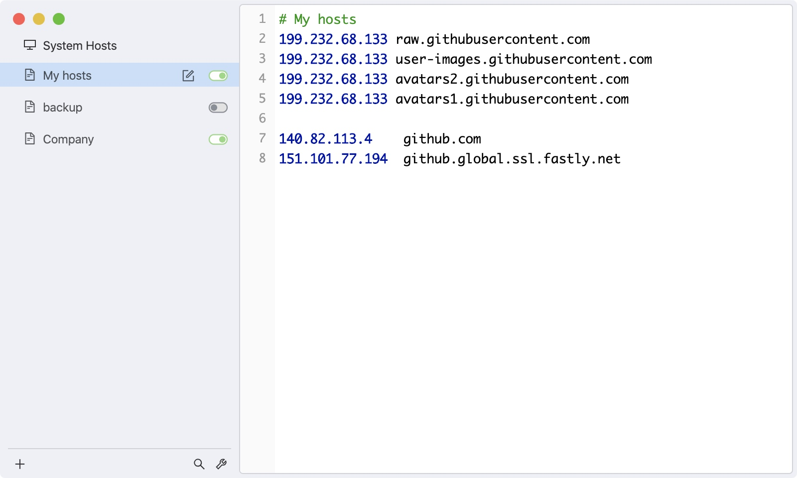
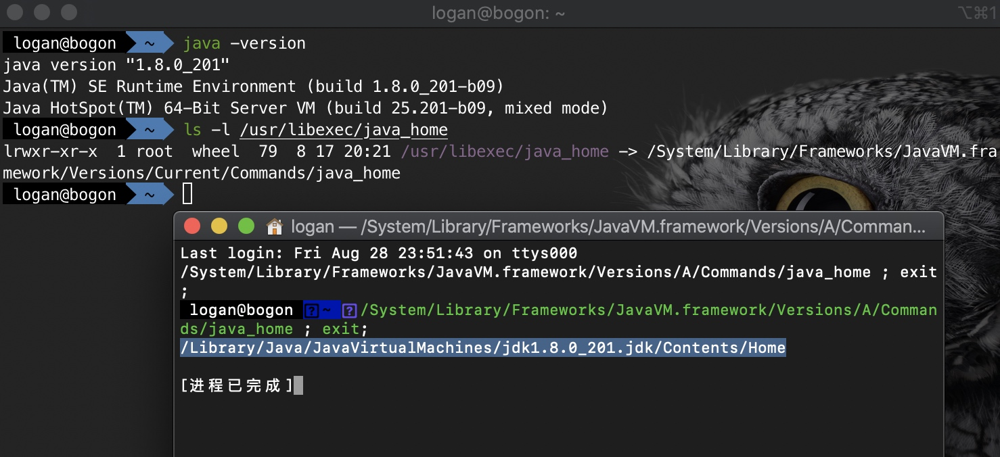

网络配置（修改hosts）
什么时候需要
比如我们在安装homeBrew的时候会遇到
curl: (7) Failed to connect to raw.githubusercontent.com port 443: Connection refused
发现脚本需要到 raw.githubusercontent.com上拉取代码,但是域名的DNS解析被污染，导致DNS解析过程不能获取正确的IP地址。
怎样找替换
打开 https://www.ipaddress.com/ 输入访问不了的域名,即raw.githubusercontent.com
可以看到


把找到的IP直接在hosts中映射就好了
怎样进行hosts文件修改
为了方便进行网络资源访问比如github我们需要对hosts文件进行修改，对于Mac常规的方式是在Finder中使用 快捷键 command + shift + G。

这里我推荐用第二种SwitchHosts

开发环境
Java环境搭建
JDK下载
Google jdk download 我们会找到Oracle网站，选择jdk8版本下载
Java配置环境变量
打开terminal,我喜欢用 iTerm2 搭配Oh My Zsh. 输入code .bash_profile(code 是vscode命令,怎么配置用vscode在terminal中使用见Visual Studio Code on macOS
)

如果是第一次配置环境变量，使用命令 touch .bash_profile 创建一个名为 .bash_profile 隐藏配置文件(怎么查看隐藏文件(快捷键 command + shift + .));
查看当前安装的Java版本号
在terminal中输入java -version

在配置文件中输入下面的内容：
JAVA_HOME=/Library/Java/JavaVirtualMachines/jdk1.8.0_201.jdk/Contents/Home
PATH=$JAVA_HOME/bin:$PATH:.
CLASSPATH=$JAVA_HOME/lib/tools.jar:$JAVA_HOME/lib/dt.jar:.
export JAVA_HOME
export PATH
export CLASSPATH
JAVA_Home 中版本号就是上面terminal中显示的版本号,当然这个办法比较土，也可以按照苹果开发者网站上的办法找Important Java Directories on Mac OS
在terminal中输入ls -l /usr/libexec/java_home

出现文件的时候可以按住command点击目录跳转也就会显示出上面截图中的路径
阅读公司技术文档
文档地址：SpringCloud微服务架构
这篇文档中说明了项目的模块划分和环境信息等
快速导包(Maven)
第一运行下载依赖包非常慢，然后同事把他电脑中的资源直接打包发给我替换掉原有的资源就完成了依赖包的下载过程。

进入该文件夹，然后替换资源文件

到这里所有的前期准备工作都做完了可以运行项目了。